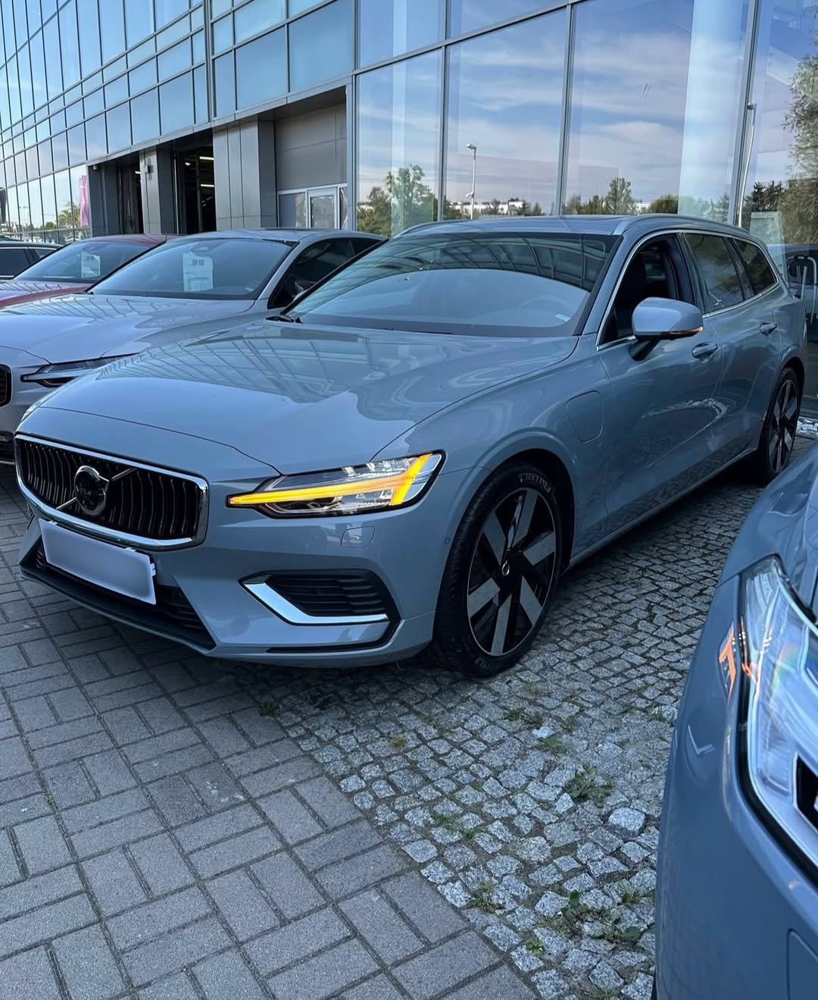
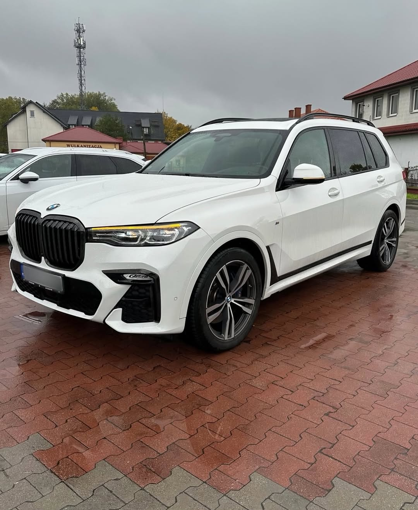

Ne trimiți anunțul
Discutăm despre mașină, serviciul potrivit și stabilim detaliile inspecției.

Tu vezi următoarea ta mașină.
Noi vedem tot ce trebuie să știi despre ea.
01 — EXPERTIZA NOASTRĂ
De la primul anunț până la cheile în mână, ai alături un specialist care știe unde să se uite.

Motor, transmisie, caroserie, electronică. Verificăm mașina în profunzime și îți explicăm ce merită atenție, într-un raport cu fotografii.
Alege inspecția ↗Analizăm 15–20 de anunțuri și verificăm fizic 5–6 mașini potrivite pentru tine. Căutare, evaluare și asistență la achiziție, în aproximativ 3–4 săptămâni.
Găsim mașina potrivită ↗O zi întreagă, un specialist de partea ta. Verificăm mai multe automobile, comparăm starea lor și alegem împreună. În medie, 7–8 mașini într-o zi.
Rezervă un expert ↗Europa, Coreea sau America. Te ghidăm de la alegere și verificare până la achiziție, transport și primirea automobilului.
Discută despre import ↗02 — DINCOLO DE APARENȚE
Explorăm peste 200 de puncte. Selectează un sistem și vezi ce urmărim la fiecare inspecție.
CE SE AFLĂ SUB CAPOTĂ
Ascultăm ce motorul are de spus. Verificăm funcționarea, uzura și semnele care pot anunța reparații costisitoare.
Totul, explicat în raportul final.
Fotografii, probleme identificate și recomandarea specialistului.
SIMPLU, DE LA ÎNCEPUT
Discutăm despre mașină, serviciul potrivit și stabilim detaliile inspecției.
Inspecție tehnică, diagnoză, evaluare caroserie și test drive, în funcție de pachet.
Primești raportul și explicațiile specialistului. Știi ce cumperi și ce ai de negociat.
03 — INVESTEȘTE ÎN CERTITUDINE
O verificare înainte de cumpărare poate schimba întreaga conversație cu vânzătorul.
PENTRU COMPANII
O imagine tehnică a întregului parc auto.
ÎNAINTE SĂ CUMPERI
90 de minute dedicate viitoarei tale mașini.
MAI MULTE OPȚIUNI
Compară opțiunile. Alege cu încredere.
Prima ta inspecție la Avangard?
Folosește codul AVANGARD2026 la programare.
04 — DIN TEREN

↗
↗EXPERIENȚA CLIENȚILOR
„Am verificat 3 mașini până să găsesc una bună. Banii sunt foarte bine investiți pentru siguranța ta!”
PARTENERI AVANGARD
05 — JURNAL AUTO
ÎNTREBĂRI FIREȘTI
Pachetul Premium Check este prezentat pentru o durată de aproximativ 90 de minute. Stabilim împreună detaliile și disponibilitatea la programare.
Un raport cu fotografii, problemele identificate și recomandarea specialistului. Îți explicăm concluziile, astfel încât să poți lua o decizie informată.
Da. Poți alege pachetul 1 + 1 = 3, la 199 €, sau serviciul Expert pentru o zi, la 249 €. Discutăm înainte despre numărul de automobile și program.
Da. Prin serviciul Mașină la cheie analizăm anunțurile, verificăm modelele selectate și te asistăm până la achiziție. Pentru import, avem un serviciu dedicat.
URMĂTORUL PAS E SIMPLU
Trimite-ne anunțul sau spune-ne ce cauți.
Stabilim împreună următorul pas.